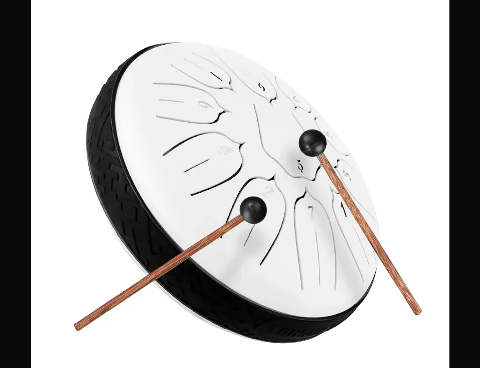
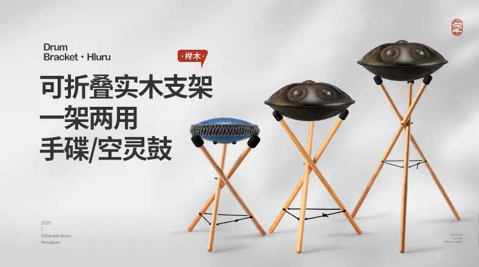
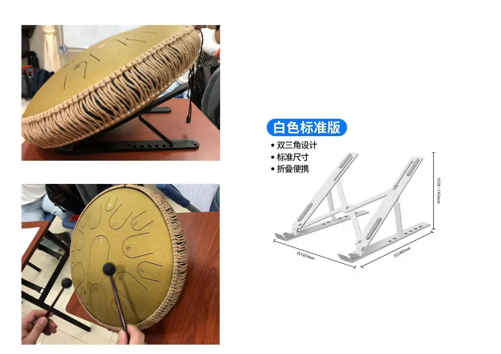
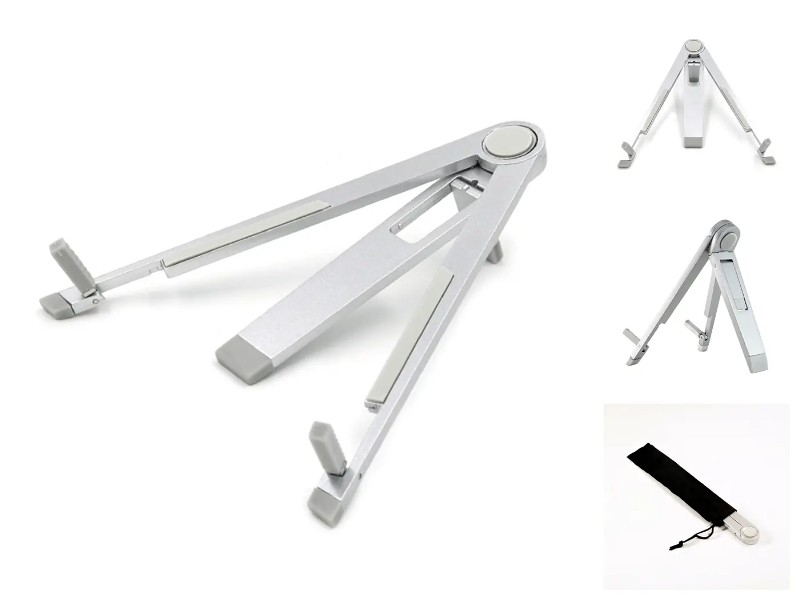
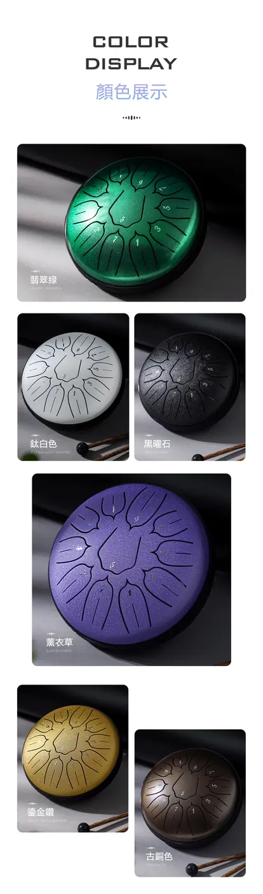
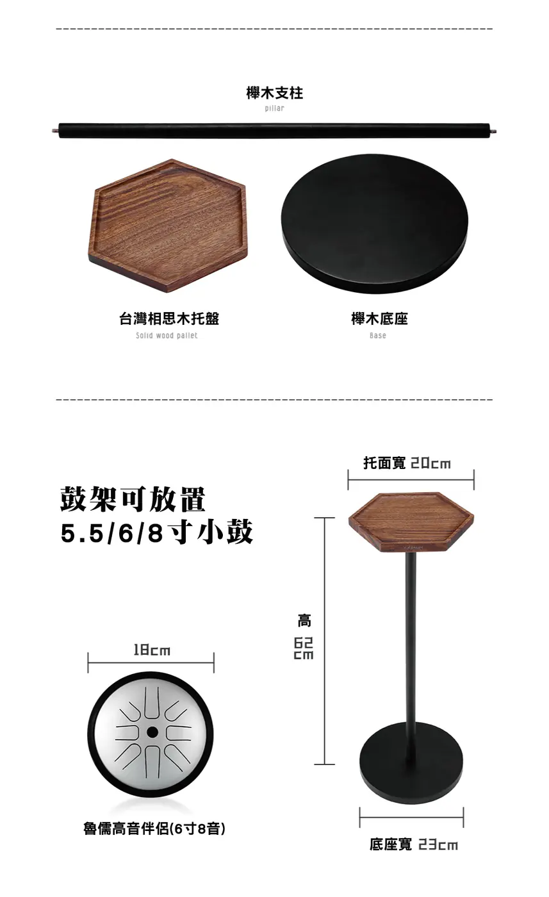

6 吋 11 音小鼓
6 吋 11 音的迷你鼓十分輕巧，方便外出攜帶演奏，11 音的排列能演奏部分簡單的小曲。顏色：白色、薰衣草、藏青、金色、翡翠綠、黑曜色。
- 學生訂購價HK$280
小鼓、鼓架和支架，上課與在家練習都用得着。
以下是舊站列出的學生訂購價，供張老師的學生代訂樂器配件之用。現貨與價錢以張老師確認為準。
6 吋 11 音的迷你鼓十分輕巧，方便外出攜帶演奏，11 音的排列能演奏部分簡單的小曲。顏色：白色、薰衣草、藏青、金色、翡翠綠、黑曜色。
專為小空靈鼓（5.5／6／8 吋適用）研發的原木可拆卸鼓托架，選用台灣相思木與櫸木，原木質感佳。
專為手碟與空靈鼓研發的原木鼓架，選用天然櫸木，可折疊，並可正轉與反轉調整成兩種高度。
簡單小巧的支架，可放空靈鼓、樂譜及書本，亦可用於桌面斜放空靈鼓。
簡單小巧的金屬支架，可用於桌面斜放空靈鼓，方便敲奏，是張老師個人推薦的款式。體型最細，只可放空靈鼓。






告訴張老師你想訂的項目與課堂日期，方便他預先安排。